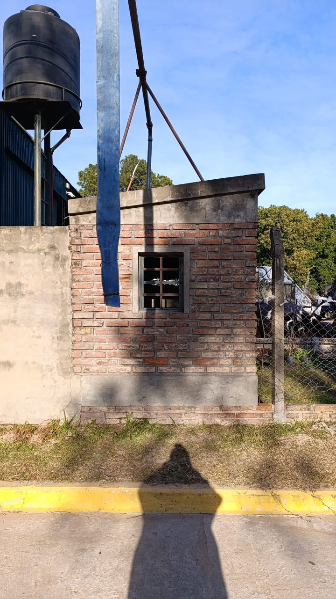
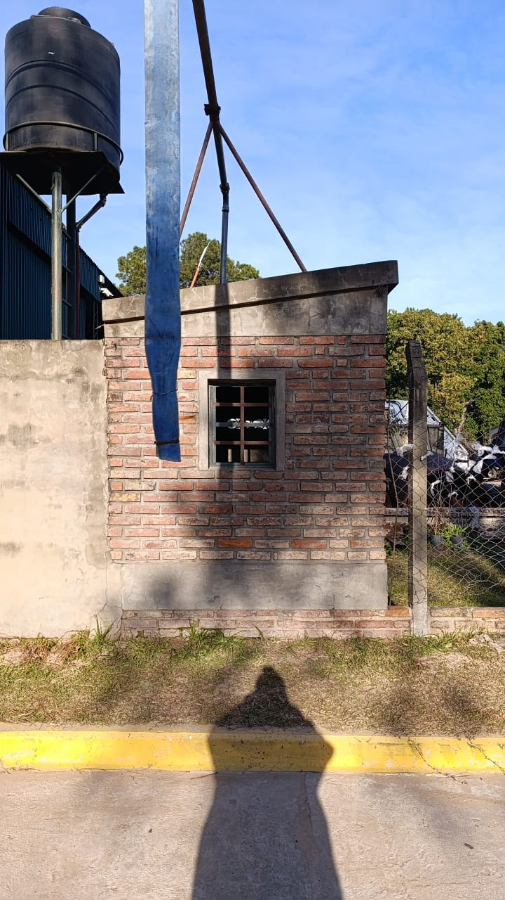

Toma Comuna Aroyolles
Descripción: Toma arroyo leyes calle Ntra Sra del Perpetuo Socorro 20 metros al este de la ruta 1
Accesibilidad: Calle pavimentada, se prende desde la ventana del frente se accede al tablero de la bomba
Tipo de Fuente: Manga superior
Ver en Maps 
La Tapera Casa Particular
Descripción: Pileta Grande se necesita Motobombas y Manga
Accesibilidad: sobre la ruta 1
Tipo de Fuente: Pileta
Ver en MapsMunicipalidad Sta Fe Deposito paraiso 17
Descripción: Manga 60 bomba en perforaqcion
Accesibilidad: calle los eucaliptus 2000 metros al oeste mano derecha tiene cuidador
Tipo de Fuente: peerforacion con bomba para Manga 60
Ver en MapsToma Municipalidad Rincon Calle saavedra
Descripción: Manga Superior, Saavedra esquina Ludovico Paganini
Accesibilidad: 50 metros de la ruta al este por calle Saavedra
Tipo de Fuente: Manga Superior, con tablero de facil acceso ssin llave
Ver en MapsBommberos Zapadores Rincon
Descripción: Manga superior, Luis leon de los santos 1400
Accesibilidad: por calle de arena
Tipo de Fuente: Manga superior
Ver en Maps